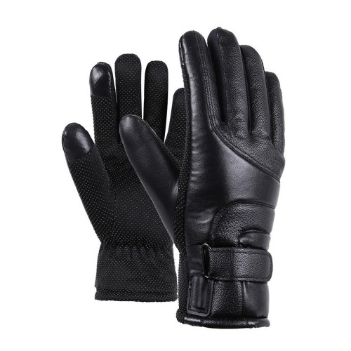

Elektroninės prekės
NUOLAT PLEČIAME PREKIŲ ASORTIMENTĄ
Palyginti (0)Nėra prekių palyginimui.
Palyginti (0)Nėra prekių palyginimui.
links Mano paskyra PrisijungtiElso Krepšelis 0
Jūsų krepšelis tuščias.
Produktų katalogas Dokumentų įrišimas, laminavimasDokumentų įrišimas, laminavimas Fakso paslaugosFakso paslaugos Išmanieji laikrodžiai ir jų priedaiIšmanieji laikrodžiai ir jų priedai Komerciniai ekranaiKomerciniai ekranai Kompiuterių remontasKompiuterių remontas KopijavimasKopijavimas Plastikiniai maišeliaiPlastikiniai maišeliai Spausdinimas, skenavimasSpausdinimas, skenavimas Spausdintuvo kasečių pildymasSpausdintuvo kasečių pildymas Spausdintuvų remontasSpausdintuvų remontas Kompiuterinė technika Kompiuteriai Nešiojami kompiuteriai (436) Planšetiniai kompiuteriai (60) Staliniai kompiuteriai (48) All in One kompiuteriai (0) E-skaityklės (0) Grafinės planšetės (0) Serveriai (21) Kompiuterių priedai Krepšiai, kuprinės, dėklai (255) Ekranų apsaugos (7) Maitinimo šaltiniai (189) Aušinimo padai (9) Jungčių stotelės (59) Atsarginės dalys (139) KVM įrenginiai ir priedai (28) Serverių priedai (5) Planšetinių kompiuterių priedai (17) Laikikliai, stovai (164) Garantijos pratęsimas (101) Monitoriai, projektoriai Monitoriai (369) Projektoriai (70) Projektorių ekranai (66) Interaktyvios lentos (0) Prezenteriai (4) Priedai (17) Periferiniai įrenginiai Pelės (262) Kilimėliai (81) Klaviatūros (204) Ausinės ir mikrofonai (537) Kolonėlės (180) Atminties kortelės (89) Atminties kortelių skaitytuvai (11) USB laikmenos (208) Išoriniai kietieji diskai (57) Media laikmenos CD, DVD ir kt. (12) WEB kameros (7) USB šakotuvai (7) Išorinės baterijos (Power banks) (44) Nepertraukiamo maitinimo šaltiniai (32) Valymo priemonės (42) Išorinių diskų dėžutės (32) Dokumentų kameros (0) Kompiuterių komponentai Procesoriai (45) Pagrindinės plokštės (254) Operatyvinės atmintys (253) Vidiniai HDD diskai (83) Vidiniai SSD diskai (125) Korpusai (197) Maitinimo blokai (55) Aušintuvai (53) Vaizdo plokštės (125) Optiniai įrenginiai (30) Kontroleriai, adapteriai (179) Garso plokštės (6) Spausdintuvai, skeneriai ir jų priedai Rašaliniai spausdintuvai (0) Lazeriniai spausdintuvai (53) Daugiafunkciniai rašaliniai įrenginiai (1) Daugiafunkciniai lazeriniai įrenginiai (54) 3D spausdintuvai (0) Eksploatacinės medžiagos (824) Skeneriai (26) Tinklo įranga Maršrutizatoriai (149) Tinklo šakotuvai (149) Prieigos taškai (76) Modemai (2) Tinklo plokštės (81) Tinklo ir telefono kabeliai (UTP, FTP, Fiber) (133) Priedai (184) Programinė įranga Antivirusinės programos (195) Biuro programos (0) Operacinės sistemos (10) Serverių programinė įranga (10) Kita programinė įranga (51) Žaidimų įranga Konsolės (0) Žaidimai (0) Valdikliai (9) Priedai (77) Virtualios realybės akiniai (2) Vaizdo ir garso technika Televizoriai ir jų priedai Televizoriai (78) TV priedėliai (6) TV laikikliai (163) TV antenos (8) Priedai (26) Smulki garso technika MP3, MP4, iPod grotuvai (0) Diktofonai (16) Radijo imtuvai (14) Namų kino sistemos Garso sistemos (78) Kita įranga (53) Foto, Video įranga Fotoaparatai (35) Vaizdo kameros (5) Veiksmo kameros (6) Priedai (127) Skaitmeniniai foto rėmeliai (0) Auto įranga Navigacijos (15) Vaizdo registratoriai (27) Priedai (21) Vaizdo stebėjimo įranga Stebėjimo kameros (97) Įrašymo įrenginiai (14) Priedai (0) Komerciniai ekranai Telefonai, išmanieji įrenginiai Telefonai Mobilieji telefonai (206) Fiksuoto ryšio telefonai (27) Dėklai (341) Ekranų apsaugos (73) Baterijos (0) Įkrovikliai (93) Laisvų rankų įranga (5) Priedai (66) Išmanieji laikrodžiai ir jų priedai Išmanieji laikrodžiai, apyrankės (106) Dronai ir jų priedai Dronai (14) Priedai (1) Išmanieji namai Valdikliai (121) Apšvietimas (53) Buitinė technika Stambi buitinė technika Skalbimo mašinos (49) Džiovyklės (9) Indaplovės (34) Šaldytuvai (63) Šaldikliai (6) Viryklės (33) Orkaitės (53) Kaitlentės (53) Gartraukiai (113) Mikrobangų krosnelės (33) Smulki virtuvės technika Plaktuvai/maišytuvai (23) Skrudintuvai (19) Sulčiaspaudės (14) Virtuviniai kombainai (9) Mėsmalės (9) Svarstyklės (19) Kokteilinės (32) Trintuvai (0) Pjaustyklės (6) Elektriniai griliai (0) Virtuvės įrankiai ir indai (180) Vaisių, daržovių džiovintuvai (6) Duonkepės (4) Kita smulki technika (132) Vandens filtrai (0) Grožis, sveikata Plaukų džiovintuvai (29) Plaukų kirpimo mašinėlės (40) Plaukų formavimo šukos (21) Plaukų tiesintuvai (8) Nosies ir ausų plaukų kirpimo mašinėlės (0) Barzdaskutės (73) Epiliatoriai (29) Masažuokliai ir kita (0) Kiti higienos reikmenys (152) Alkotesteriai (0) Kavos aparatai ir virduliai Kavos aparatai (38) Kavamalės (13) Kavos aparatų priedai (6) Pieno plaktuvai (5) Virduliai (111) Namų technika Dulkių siurbliai (127) Džiovyklės (0) Lygintuvai (59) Pūkų surinkėjai (8) Svarstyklės (buitinės) (28) Šildytuvai (70) Ventiliatoriai (30) Sieniniai laikrodžiai (0) Lyginimo lentos (2) Oro valytuvai (12) Grindų valymo priemonės (10) Namų apyvokos prekės (6) Priedai (132) Elektroninės prekės Pasyviniai elektronikos komponentai Kondensatoriai (2) Rezistoriai (1) Aktyviniai elektronikos komponentai Tranzistoriai (2) Mikroschemos, mikroschemų lizdai (1) Relės, herkonai, termokontaktai Elektromagnetinės VDC relės (2) Relių lizdai ir laikikliai (2) Ventiliatoriai ir varikliai Ventiliatoriai (1) Ventiliatorių priedai (4) Jungikliai Klavišiniai jungikliai (24) Mygtukiniai jungikliai (16) Permetamieji jungikliai (tumbleriai) (2) Automobiliniai jungikliai (1) Garso-vaizdo, TV technika ir jos dalys TV antenos, skirstytuvai ir stiprintuvai (16) DVBT, SAT imtuvai, monitoriai (3) Garsiakalbiai (3) Nuotolinio valdymo pultai (21) Šviesos šaltiniai, indikacijos elementai Šviesos diodai, puslaidininkiniai indikatoriai (30) Maitinimo šaltiniai ir valdikliai LED apšvietimui (4) Lemputės (43) Priedai lemputėms (1) Žibintuvėliai, šviestuvai (47) Saugikliai, saugiklių laikikliai, termokontaktai Tirpieji stikliniai saugikliai (38) Tirpieji keraminiai saugikliai (2) Saugikliai automobiliams ir autoaparatūrai (33) Saugiklių laikikliai (4) Dirbtuvių įranga Matavimo ir kontrolės prietaisai (9) Litavimo ir kaitinimo įranga (19) Konstravimo ir montavimo įranga (18) Įrankių rinkiniai ir dėtuvės (15) Kabelių aksesuarai Izoliacinės, ekranuojančios juostos (9) Izoliaciniai termovamzdeliai (23) Kabelių tvirtinimo dirželiai ir laikikliai (23) Energijos šaltiniai Baterijos (249) Baterijos klausos aparatams (16) Bendros paskirties NiMH, NiCd akumuliatoriai (10) Bendros paskirties Li-ion akumuliatoriai (1) Bendros paskirties Pb akumuliatoriai (19) Akumuliatorių įkrovikliai (19) Maitinimo šaltiniai, įtampos keitikliai (105) Kabeliai ir laidai montavimui Kompiuterinio tinklo kabeliai (4) Telefonų ir signalizacijų kabeliai (2) Koaksialiniai kabeliai (6) Kabeliai ir laidai garsiakalbiams (13) Kabeliai autoaparatūros maitinimui (2) Maitinimo tinklo ilgikliai (14) Medžiagos, detalės konstravimui ir instaliavimui Lydmetalis, priedai litavimui (26) Klijai, elektrai ir šilumai laidžios pastos (5) Aerozoliai, valikliai, kitos cheminės medžiagos (3) Izoliacinės medžiagos, tarpinės (11) Spausdintinės ir maketavimo plokštės (2) Jungiamieji kabeliai, ilgikliai Jungiamieji garso-vaizdo kabeliai (103) Kabeliai ir jungtys (166) Jungiamieji kompiuterių ir kompiuterinio tinklo kabeliai (176) Jungiamieji optiniai kabeliai (3) Jungiamieji kaoksialiniai kabeliai (7) Jungiamieji telefoniniai kabeliai (46) Jungiamieji maitinimo kabeliai (55) Jungiamieji USB kabeliai (173) Instaliaciniai komplektai audiosistemoms (4) Jungtys Antgaliai laidams (62) Kontaktinės kaladėlės (5) Duomenų perdavimo jungtys (14) Kištukai, lizdai, perėjimai telefonų, kompiuterių laidams (17) Maitinimo jungtys (24) TV ir kitos aukšto dažnio jungtys (31) Audio-video jungtys (35) Perėjimas audio-video (27) Jungtys automobilių įrangai (14) Laboratorinės jungtys (16) Laikikliai elementams ir akumuliatoriams (1) Gnybtai laidams sujungti (9) Priedai automobiliui Saugikliai automobiliams ir autoaparatūrai (28) Automobilių apsaugos sistemos dalys (1) Automobiliniai jungikliai (3) Įtampos keitikliai DC/AC ir DC/DC (1) Jungtys automobilių įrangai (11) Automobilinė garso-vaizdo technika (7) Automobiliniai USB įkrovikliai / ilgintuvai (10) Kita (36) Kanceliarinės prekės Rašymo priemonės Tušinukai (66) Rašikliai (42) Plunksnakočiai, roleriai (28) Rašymo priemonių rinkiniai (12) Teksto žymekliai, markeriai (60) Pieštukai, grafitai (37) Rašalas, kapsulės (12) Šerdelės (7) Kreida - kreidelės (9) Dokumentų archyvavimo priemonės Segtuvai (24) Segtuvėliai (31) Įmautės, vokeliai (29) Aplankai (23) Archyvinės dėžės (1) Stovai dokumentams (7) Skiriamieji lapai (1) Dėkliukai kortelėms (3) Rėmeliai (1) Įrišimo medžiagos (10) Kita (19) Mokyklinės prekės Kuprinės, penalai, aksesuarai (16) Flomasteriai, spalvoti pieštukai (13) Sąsiuviniai, aplankalai (45) Skriestuvai (8) Liniuotės (17) Akvarelė, dažai, guašas (34) Teptukai (35) Modelinas, plastilinas (8) Didinimo stiklai (3) Popierius ir jo gaminiai Biuro popierius (47) Spalvotas popierius (54) Popierius, popieriukai užrašams (10) Lipnūs lapeliai, skirtukai (15) Vokai (7) Kontoriniai sąsiuviniai ir knygos (8) Bloknotai, užrašų knygutės (28) Diplominis - dekoratyvinis popierius (43) Braižybos ir milimetrinis popierius (1) Kalendoriai, darbo knygos (3) Natų sąsiuviniai ir žodynėliai (5) Lipnios etiketės (19) Kartonas, krepinis popierius (36) Kasos juosta, kainelės (17) Piešimo, tapybos sąsiuviniai, spalvotas popierius-kartonas (22) Popieriniai rankšluosčiai, tualetinis popierius (9) Darbo stalo reikmenys Darbo stalo rinkiniai, jų dalys (31) Skylamušiai (8) Segikliai (14) Sąsagėlės, išsegėjai (9) Sąvaržėlės, smeigtukai, adatėlės, magnetukai (23) Klijai (19) Korektūros priemonės (14) Žirklės (14) Lipni juosta (32) Skaičiuotuvai (28) Trintukai (12) Drožtukai (12) Spaustukai, smeigtukai (13) Gumytės (2) Maketavimo peiliukai, geležtės (4) Apskaitos blankai ir žurnalai IDV formos (2) Numeruoti blankai (8) Darbo sauga (4) Kasa, bankas (16) Kuro apskaitos formos (3) Kadrai, darbo užmokestis (5) Registrai (4) Medžiagos, prekės (12) Žemės ūkio apskaitos formos (1) Medicininiai blankai (1) Antspaudai Rašalas antspaudams (7) Pagalvėlės antspaudams (6) Antspaudų korpusai (1) Biuro technika Laminavimo medžiagos (10) Etikečių spausdintuvai, priedai (3) Laminavimo įrenginiai ir jų priedai (11) Dokumentų naikintuvai (7) Įrišimo aparatai (0) Pjaustyklės ir priedai (0) Brūkšninių kodų skaitytuvai (0) Kita biuro technika, priedai (5) Šventinė atributika ir aksesuarai Aksesuarai (4) Balionai (4) Plastikiniai maišeliai Paslaugos Spausdinimas, skenavimas Kopijavimas Spausdintuvo kasečių pildymas Kompiuterių remontas Spausdintuvų remontas Fakso paslaugos Dokumentų įrišimas, laminavimas +370 41 586444 info@elso.lt Informacija PrisijungtiInformacija
PREKIŲ KATALOGAS
PREKIŲ KATALOGAS
NUOLAT PLEČIAME PREKIŲ ASORTIMENTĄ
Palyginti (0)Nėra prekių palyginimui.
KATALOGAS
Krepšelis 0Jūsų krepšelis tuščias.
Informacija Prisijungti